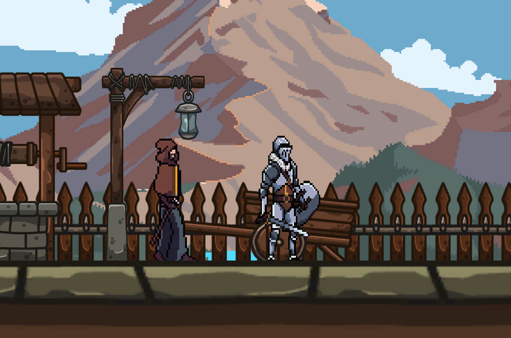

The Lost Letters - Jeu de Plateforme 2D

Contexte du projet
The Lost Letters est mon premier jeu vidéo solo. Il s’agit d’un jeu de plateforme en 2D que j’ai développé sur Unity dans le cadre d’un projet en première année de BUT Informatique.
Ce projet m’a permis de découvrir l’univers du développement de jeux vidéo, en passant par le game design, la programmation, la gestion des sons/musiques, ainsi que la création de petites intelligences artificielles pour animer les ennemis et personnages non-joueurs.
Objectifs et apprentissages
- Découverte de Unity et de son environnement de développement.
- Création d’un gameplay simple mais efficace (déplacement, sauts, collecte d’objets).
- Développement d’interfaces utilisateur : menus, écrans de victoire/défaite, HUD.
- Gestion des sons : bruitages, musiques de fond (via LaSonothèque).
- Implémentation d’éléments d’IA basique pour animer les ennemis (patrouilles, détection du joueur...).
Technologies utilisées
- Unity : moteur de jeu principal utilisé pour développer le gameplay et l’environnement.
- C# : langage de programmation pour la logique du jeu et les interactions.
- Itch.io : plateforme où j’ai trouvé les assets graphiques pour les décors, personnages et monstres.
- LaSonothèque : ressources libres de droits pour les musiques et les effets sonores.
Compétences développées
Techniques :
- Programmation orientée objet en C#.
- Utilisation des composants Unity : Rigidbody2D, Collider2D, Animator.
- Création d’UI (menus, écrans de jeu) et gestion de scènes.
Transversales :
- Apprentissage autonome : prise en main de Unity et création d’un prototype complet.
- Création d’une expérience utilisateur cohérente et fluide.
- Organisation personnelle et gestion de projet solo.
Gameplay & Fonctionnalités
- Un personnage principal capable de sauter, courir et collecter des lettres.
- Des ennemis avec une IA simple, qui patrouillent et attaquent si le joueur s’approche.
- Un système de score basé sur la collecte d'objets.
- Une ambiance sonore immersive (musique + effets).
- Un niveau de difficulté progressif.
Conclusion
The Lost Letters a été une expérience enrichissante. Ce projet m’a permis de m’initier à la conception de jeux vidéo et d’améliorer mes compétences en programmation sur Unity.
J’ai pu expérimenter le game design, la création de menus, la gestion des collisions et la mise en place de sons dans une application interactive. Ce projet a été la base de mon intérêt pour le développement de jeux et la réalité virtuelle !